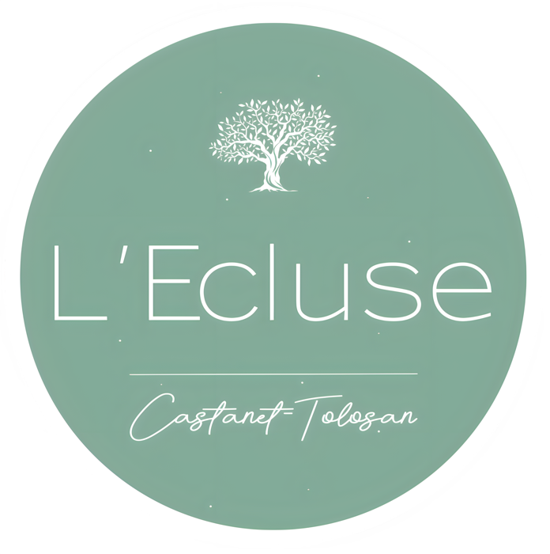
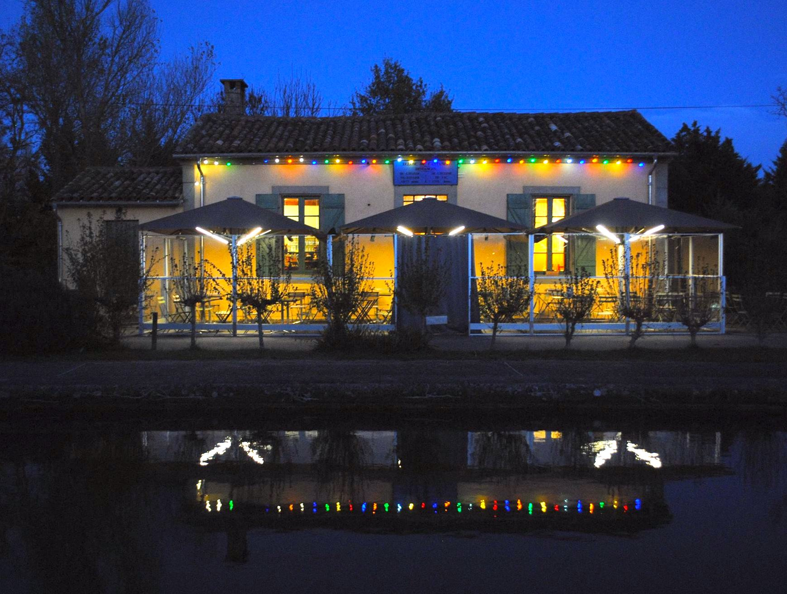
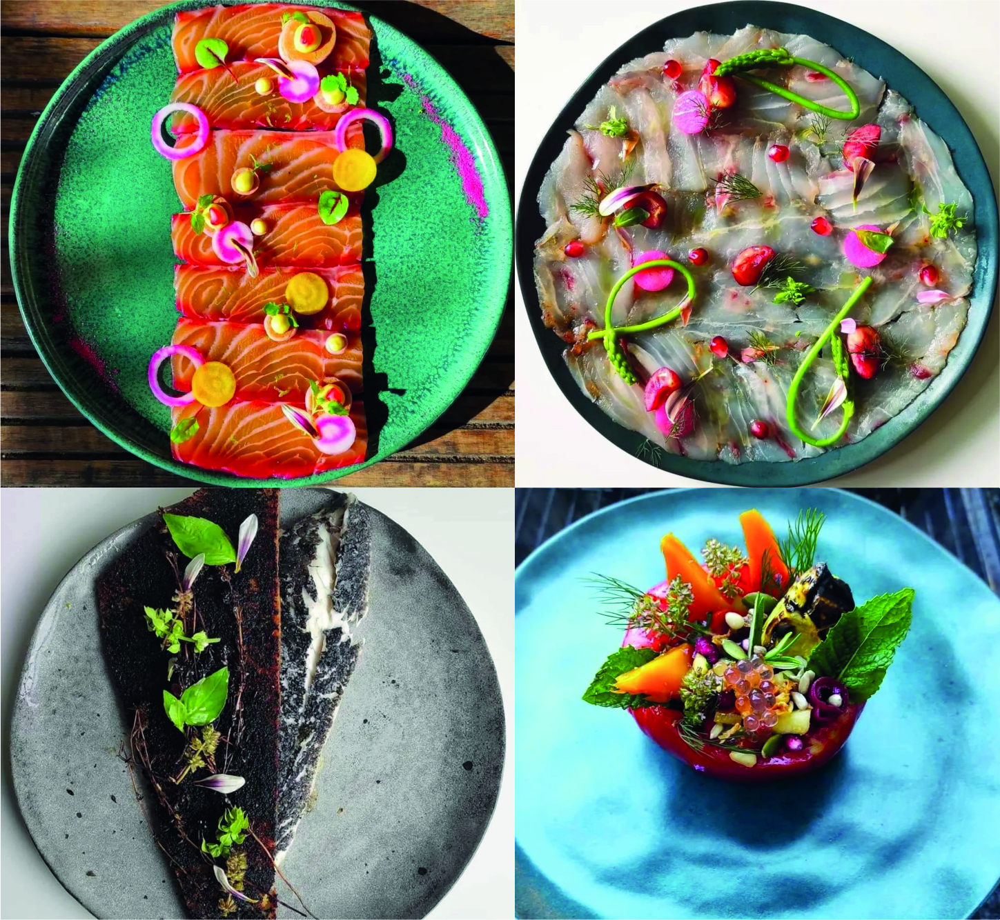
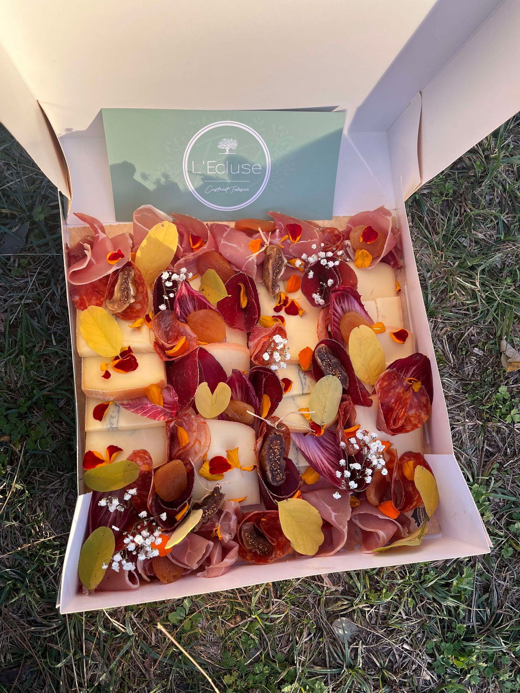
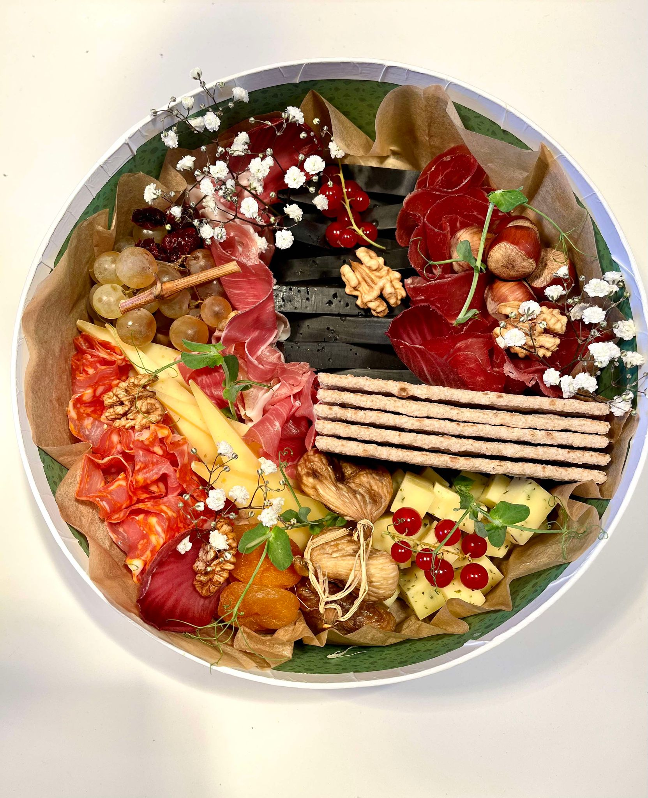

Le Salon
Élégant et chaleureux, idéal pour un déjeuner ou un dîner raffiné.

Maison éclusière du XIXᵉ siècle · Canal du Midi
Castanet-Tolosan
Une cuisine audacieuse, inspirée, ponctuée de marqueurs forts —
au fil de l'eau, dans un monument historique.
La Maison
Au cœur de Castanet-Tolosan, en Haute-Garonne, L'Écluse occupe cette ancienne maison éclusière du XIXᵉ siècle, classée monument historique.
Posée sur les anciens chemins de halage devenus pistes cyclables, la maison surplombe le Canal du Midi. Un lieu chargé d'histoire, où l'eau, la pierre et les platanes composent un décor que peu de tables peuvent offrir.

★ Coup de cœur · Graines de Vainqueur de l'année
Notre cuisine
Notre cuisine se veut audacieuse, inspirée et ponctuée de marqueurs forts.
Chaque assiette part d'une sélection rigoureuse du produit : du végétal local, de la pêche responsable, des viandes choisies avec soin. Le menu du soir se découvre comme une carte surprise, pensée pour sublimer l'expérience.
Recevoir
Du salon intimiste à la terrasse au bord de l'eau, chaque espace se privatise pour vos moments d'exception.
Élégant et chaleureux, idéal pour un déjeuner ou un dîner raffiné.
Une atmosphère feutrée et confidentielle, sous les voûtes.
Face au Canal du Midi, à l'ombre des platanes.
Au cœur de la cuisine, au plus près du geste et du feu.
La Carte
Une carte qui évolue au rythme des saisons et des arrivages.
Réservation conseillée · Groupes de plus de 10 personnes : merci de réserver par téléphone.
Signature
Escales créatives
Des créations apéritives à emporter, composées comme un tableau : fromages affinés, charcuteries, tartinades, fruits et légumes frais, confitures.
17 € / personne — sur réservation
Commander une escale

Galerie
Horaires & Contact
Du mercredi au dimanche
Déjeuner 12h00 – 14h00
Dîner 19h30 – 21h00
Fermé dimanche soir, lundi, mardi et mercredi soir. Bar de l'après-midi selon la météo.
Du lundi au vendredi — déjeuner 12h00 – 14h00
Jeudi & vendredi soir 19h30 – 21h00
Week-ends sur réservation pour les groupes (18 adultes minimum).